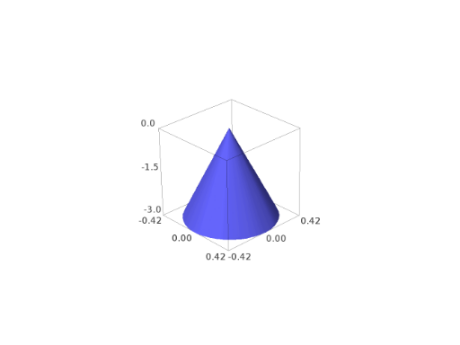
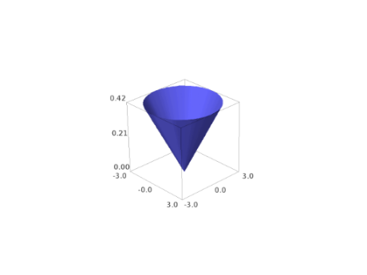
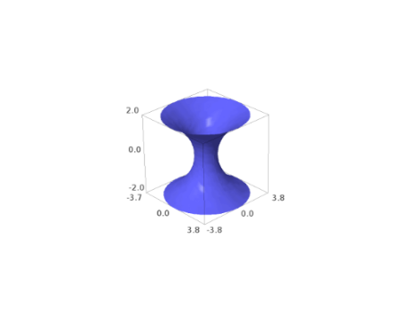
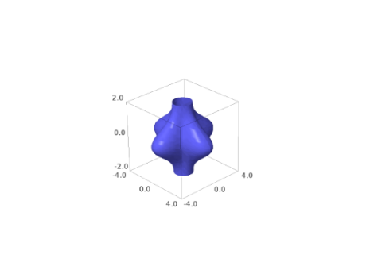
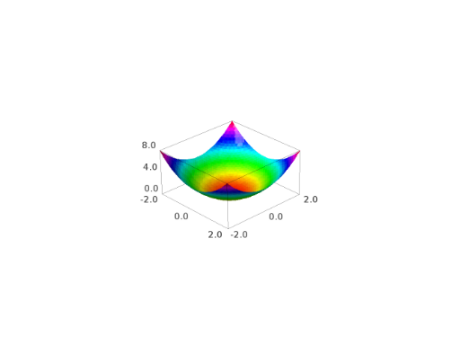
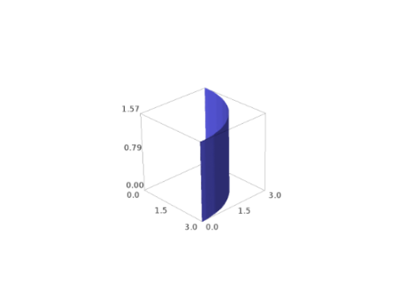

Plotting Functions¶
EXAMPLES:
sage: x, y = var('x y')
sage: W = plot3d(sin(pi*((x)^2+(y)^2))/2,(x,-1,1),(y,-1,1), frame=False, color='purple', opacity=0.8)
sage: S = sphere((0,0,0),size=0.3, color='red', aspect_ratio=[1,1,1])
sage: show(W + S, figsize=8)

sage: def f(x,y):
....: return math.sin(y^2+x^2)/math.sqrt(x^2+y^2+0.0001)
sage: P = plot3d(f,(-3,3),(-3,3), adaptive=True, color=rainbow(60, 'rgbtuple'), max_bend=.1, max_depth=15)
sage: P.show()

sage: def f(x,y):
....: return math.exp(x/5)*math.sin(y)
...
sage: P = plot3d(f,(-5,5),(-5,5), adaptive=True, color=['red','yellow'])
sage: from sage.plot.plot3d.plot3d import axes
sage: S = P + axes(6, color='black')
sage: S.show()
Here is an example using a colormap and a color function c:
sage: x, y = var('x y')
sage: cm = colormaps.hsv
sage: def c(x,y): return float((x+y+x*y)/15) % 1
sage: plot3d(x*x+y*y,(x,-4,4),(y,-4,4),color=(c,cm))
Graphics3d Object
Beware that the color function must take values between 0 and 1.
We plot “cape man”:
sage: S = sphere(size=.5, color='yellow')
sage: from sage.plot.plot3d.shapes import Cone
sage: S += Cone(.5, .5, color='red').translate(0,0,.3)
sage: S += sphere((.45,-.1,.15), size=.1, color='white') + sphere((.51,-.1,.17), size=.05, color='black')
sage: S += sphere((.45, .1,.15),size=.1, color='white') + sphere((.51, .1,.17), size=.05, color='black')
sage: S += sphere((.5,0,-.2),size=.1, color='yellow')
sage: def f(x,y): return math.exp(x/5)*math.cos(y)
sage: P = plot3d(f,(-5,5),(-5,5), adaptive=True, color=['red','yellow'], max_depth=10)
sage: cape_man = P.scale(.2) + S.translate(1,0,0)
sage: cape_man.show(aspect_ratio=[1,1,1])
Or, we plot a very simple function indeed:
sage: plot3d(pi, (-1,1), (-1,1))
Graphics3d Object
Transparent with fractional opacity value:
sage: plot3d(lambda x, y: x^2 + y^2, (-2,2), (-2,2), opacity=8/10)
Graphics3d Object
Todo
Add support for smooth triangles.
AUTHORS:
Tom Boothby: adaptive refinement triangles
Josh Kantor: adaptive refinement triangles
Robert Bradshaw (2007-08): initial version of this file
William Stein (2007-12, 2008-01): improving 3d plotting
Oscar Lazo, William Cauchois, Jason Grout (2009-2010): Adding coordinate transformations
- class sage.plot.plot3d.plot3d.Cylindrical(dep_var, indep_vars)¶
Bases:
sage.plot.plot3d.plot3d._CoordinatesA cylindrical coordinate system for use with
plot3d(transformation=...)where the position of a point is specified by three numbers:the radial distance (
radius) from the \(z\)-axisthe azimuth angle (
azimuth) from the positive \(x\)-axisthe height or altitude (
height) above the \(xy\)-plane
These three variables must be specified in the constructor.
EXAMPLES:
Construct a cylindrical transformation for a function for
heightin terms ofradiusandazimuth:sage: T = Cylindrical('height', ['radius', 'azimuth'])
If we construct some concrete variables, we can get a transformation:
sage: r, theta, z = var('r theta z') sage: T.transform(radius=r, azimuth=theta, height=z) (r*cos(theta), r*sin(theta), z)
We can plot with this transform. Remember that the dependent variable is the height, and the independent variables are the radius and the azimuth (in that order):
sage: plot3d(9-r^2, (r, 0, 3), (theta, 0, pi), transformation=T) Graphics3d Object

We next graph the function where the radius is constant:
sage: S=Cylindrical('radius', ['azimuth', 'height']) sage: theta,z=var('theta, z') sage: plot3d(3, (theta,0,2*pi), (z, -2, 2), transformation=S) Graphics3d Object

See also
cylindrical_plot3d()for more examples of plotting in cylindrical coordinates.- transform(radius=None, azimuth=None, height=None)¶
A cylindrical coordinates transform.
EXAMPLES:
sage: T = Cylindrical('height', ['azimuth', 'radius']) sage: T.transform(radius=var('r'), azimuth=var('theta'), height=var('z')) (r*cos(theta), r*sin(theta), z)
- class sage.plot.plot3d.plot3d.Spherical(dep_var, indep_vars)¶
Bases:
sage.plot.plot3d.plot3d._CoordinatesA spherical coordinate system for use with
plot3d(transformation=...)where the position of a point is specified by three numbers:the radial distance (
radius) from the originthe azimuth angle (
azimuth) from the positive \(x\)-axisthe inclination angle (
inclination) from the positive \(z\)-axis
These three variables must be specified in the constructor.
EXAMPLES:
Construct a spherical transformation for a function for the radius in terms of the azimuth and inclination:
sage: T = Spherical('radius', ['azimuth', 'inclination'])
If we construct some concrete variables, we can get a transformation in terms of those variables:
sage: r, phi, theta = var('r phi theta') sage: T.transform(radius=r, azimuth=theta, inclination=phi) (r*cos(theta)*sin(phi), r*sin(phi)*sin(theta), r*cos(phi))
We can plot with this transform. Remember that the dependent variable is the radius, and the independent variables are the azimuth and the inclination (in that order):
sage: plot3d(phi * theta, (theta, 0, pi), (phi, 0, 1), transformation=T) Graphics3d Object

We next graph the function where the inclination angle is constant:
sage: S=Spherical('inclination', ['radius', 'azimuth']) sage: r,theta=var('r,theta') sage: plot3d(3, (r,0,3), (theta, 0, 2*pi), transformation=S) Graphics3d Object
 See also
spherical_plot3d()for more examples of plotting in spherical coordinates.- transform(radius=None, azimuth=None, inclination=None)¶
A spherical coordinates transform.
EXAMPLES:
sage: T = Spherical('radius', ['azimuth', 'inclination']) sage: T.transform(radius=var('r'), azimuth=var('theta'), inclination=var('phi')) (r*cos(theta)*sin(phi), r*sin(phi)*sin(theta), r*cos(phi))
- class sage.plot.plot3d.plot3d.SphericalElevation(dep_var, indep_vars)¶
Bases:
sage.plot.plot3d.plot3d._CoordinatesA spherical coordinate system for use with
plot3d(transformation=...)where the position of a point is specified by three numbers:the radial distance (
radius) from the originthe azimuth angle (
azimuth) from the positive \(x\)-axisthe elevation angle (
elevation) from the \(xy\)-plane toward the positive \(z\)-axis
These three variables must be specified in the constructor.
EXAMPLES:
Construct a spherical transformation for the radius in terms of the azimuth and elevation. Then, get a transformation in terms of those variables:
sage: T = SphericalElevation('radius', ['azimuth', 'elevation']) sage: r, theta, phi = var('r theta phi') sage: T.transform(radius=r, azimuth=theta, elevation=phi) (r*cos(phi)*cos(theta), r*cos(phi)*sin(theta), r*sin(phi))
We can plot with this transform. Remember that the dependent variable is the radius, and the independent variables are the azimuth and the elevation (in that order):
sage: plot3d(phi * theta, (theta, 0, pi), (phi, 0, 1), transformation=T) Graphics3d Object

We next graph the function where the elevation angle is constant. This should be compared to the similar example for the
Sphericalcoordinate system:sage: SE=SphericalElevation('elevation', ['radius', 'azimuth']) sage: r,theta=var('r,theta') sage: plot3d(3, (r,0,3), (theta, 0, 2*pi), transformation=SE) Graphics3d Object
 Plot a sin curve wrapped around the equator:
sage: P1=plot3d( (pi/12)*sin(8*theta), (r,0.99,1), (theta, 0, 2*pi), transformation=SE, plot_points=(10,200)) sage: P2=sphere(center=(0,0,0), size=1, color='red', opacity=0.3) sage: P1+P2 Graphics3d Object

Now we graph several constant elevation functions alongside several constant inclination functions. This example illustrates the difference between the
Sphericalcoordinate system and theSphericalElevationcoordinate system:sage: r, phi, theta = var('r phi theta') sage: SE = SphericalElevation('elevation', ['radius', 'azimuth']) sage: angles = [pi/18, pi/12, pi/6] sage: P1 = [plot3d( a, (r,0,3), (theta, 0, 2*pi), transformation=SE, opacity=0.85, color='blue') for a in angles] sage: S = Spherical('inclination', ['radius', 'azimuth']) sage: P2 = [plot3d( a, (r,0,3), (theta, 0, 2*pi), transformation=S, opacity=0.85, color='red') for a in angles] sage: show(sum(P1+P2), aspect_ratio=1)
See also
spherical_plot3d()for more examples of plotting in spherical coordinates.- transform(radius=None, azimuth=None, elevation=None)¶
A spherical elevation coordinates transform.
EXAMPLES:
sage: T = SphericalElevation('radius', ['azimuth', 'elevation']) sage: T.transform(radius=var('r'), azimuth=var('theta'), elevation=var('phi')) (r*cos(phi)*cos(theta), r*cos(phi)*sin(theta), r*sin(phi))
- class sage.plot.plot3d.plot3d.TrivialTriangleFactory¶
Bases:
objectClass emulating behavior of
TriangleFactorybut simply returning a list of vertices for both regular and smooth triangles.- smooth_triangle(a, b, c, da, db, dc, color=None)¶
Function emulating behavior of
smooth_triangle()but simply returning a list of vertices.INPUT:
a,b,c: triples (x,y,z) representing corners on a triangle in 3-spaceda,db,dc: ignoredcolor: ignored
OUTPUT:
the list
[a,b,c]
- triangle(a, b, c, color=None)¶
Function emulating behavior of
triangle()but simply returning a list of vertices.INPUT:
a,b,c: triples (x,y,z) representing corners on a triangle in 3-spacecolor: ignored
OUTPUT:
the list
[a,b,c]
- sage.plot.plot3d.plot3d.axes(scale=1, radius=None, **kwds)¶
Creates basic axes in three dimensions. Each axis is a three dimensional arrow object.
INPUT:
scale- (default: 1) The length of the axes (all three will be the same).radius- (default: .01) The radius of the axes as arrows.
EXAMPLES:
sage: from sage.plot.plot3d.plot3d import axes sage: S = axes(6, color='black'); S Graphics3d Object

sage: T = axes(2, .5); T Graphics3d Object

- sage.plot.plot3d.plot3d.cylindrical_plot3d(f, urange, vrange, **kwds)¶
Plots a function in cylindrical coordinates. This function is equivalent to:
sage: r,u,v=var('r,u,v') sage: f=u*v; urange=(u,0,pi); vrange=(v,0,pi) sage: T = (r*cos(u), r*sin(u), v, [u,v]) sage: plot3d(f, urange, vrange, transformation=T) Graphics3d Object
or equivalently:
sage: T = Cylindrical('radius', ['azimuth', 'height']) sage: f=lambda u,v: u*v; urange=(u,0,pi); vrange=(v,0,pi) sage: plot3d(f, urange, vrange, transformation=T) Graphics3d Object
INPUT:
f- a symbolic expression or function of two variables, representing the radius from the \(z\)-axis.urange- a 3-tuple (u, u_min, u_max), the domain of the azimuth variable.vrange- a 3-tuple (v, v_min, v_max), the domain of the elevation (\(z\)) variable.
EXAMPLES:
A portion of a cylinder of radius 2:
sage: theta,z=var('theta,z') sage: cylindrical_plot3d(2,(theta,0,3*pi/2),(z,-2,2)) Graphics3d Object
Some random figures:
sage: cylindrical_plot3d(cosh(z),(theta,0,2*pi),(z,-2,2)) Graphics3d Object
 sage: cylindrical_plot3d(e^(-z^2)*(cos(4*theta)+2)+1,(theta,0,2*pi),(z,-2,2),plot_points=[80,80]).show(aspect_ratio=(1,1,1))

- sage.plot.plot3d.plot3d.plot3d(f, urange, vrange, adaptive=False, transformation=None, **kwds)¶
Plots a function in 3d.
INPUT:
f- a symbolic expression or function of 2 variablesurange- a 2-tuple (u_min, u_max) or a 3-tuple (u, u_min, u_max)vrange- a 2-tuple (v_min, v_max) or a 3-tuple (v, v_min, v_max)adaptive- (default: False) whether to use adaptive refinement to draw the plot (slower, but may look better). This option does NOT work in conjunction with a transformation (see below).mesh- bool (default: False) whether to display mesh grid linesdots- bool (default: False) whether to display dots at mesh grid pointsplot_points- (default: “automatic”) initial number of sample points in each direction; an integer or a pair of integerstransformation- (default: None) a transformation to apply. May be a 3 or 4-tuple (x_func, y_func, z_func, independent_vars) where the first 3 items indicate a transformation to Cartesian coordinates (from your coordinate system) in terms of u, v, and the function variable fvar (for which the value of f will be substituted). If a 3-tuple is specified, the independent variables are chosen from the range variables. If a 4-tuple is specified, the 4th element is a list of independent variables.transformationmay also be a predefined coordinate system transformation like Spherical or Cylindrical.
Note
meshanddotsare not supported when using the Tachyon raytracer renderer.EXAMPLES: We plot a 3d function defined as a Python function:
sage: plot3d(lambda x, y: x^2 + y^2, (-2,2), (-2,2)) Graphics3d Object

We plot the same 3d function but using adaptive refinement:
sage: plot3d(lambda x, y: x^2 + y^2, (-2,2), (-2,2), adaptive=True) Graphics3d Object

Adaptive refinement but with more points:
sage: plot3d(lambda x, y: x^2 + y^2, (-2,2), (-2,2), adaptive=True, initial_depth=5) Graphics3d Object
 We plot some 3d symbolic functions:
sage: var('x,y') (x, y) sage: plot3d(x^2 + y^2, (x,-2,2), (y,-2,2)) Graphics3d Object

sage: plot3d(sin(x*y), (x, -pi, pi), (y, -pi, pi)) Graphics3d Object

We give a plot with extra sample points:
sage: var('x,y') (x, y) sage: plot3d(sin(x^2+y^2),(x,-5,5),(y,-5,5), plot_points=200) Graphics3d Object

sage: plot3d(sin(x^2+y^2),(x,-5,5),(y,-5,5), plot_points=[10,100]) Graphics3d Object

A 3d plot with a mesh:
sage: var('x,y') (x, y) sage: plot3d(sin(x-y)*y*cos(x),(x,-3,3),(y,-3,3), mesh=True) Graphics3d Object

The same with thicker mesh lines (not supported in all viewers):
sage: var('x,y') (x, y) sage: plot3d(sin(x-y)*y*cos(x),(x,-3,3),(y,-3,3), mesh=True, ....: thickness=2, viewer='threejs') Graphics3d Object
Two wobby translucent planes:
sage: x,y = var('x,y') sage: P = plot3d(x+y+sin(x*y), (x,-10,10),(y,-10,10), opacity=0.87, color='blue') sage: Q = plot3d(x-2*y-cos(x*y),(x,-10,10),(y,-10,10),opacity=0.3,color='red') sage: P + Q Graphics3d Object

We draw two parametric surfaces and a transparent plane:
sage: L = plot3d(lambda x,y: 0, (-5,5), (-5,5), color="lightblue", opacity=0.8) sage: P = plot3d(lambda x,y: 4 - x^3 - y^2, (-2,2), (-2,2), color='green') sage: Q = plot3d(lambda x,y: x^3 + y^2 - 4, (-2,2), (-2,2), color='orange') sage: L + P + Q Graphics3d Object

We draw the “Sinus” function (water ripple-like surface):
sage: x, y = var('x y') sage: plot3d(sin(pi*(x^2+y^2))/2,(x,-1,1),(y,-1,1)) Graphics3d Object

Hill and valley (flat surface with a bump and a dent):
sage: x, y = var('x y') sage: plot3d( 4*x*exp(-x^2-y^2), (x,-2,2), (y,-2,2)) Graphics3d Object
An example of a transformation:
sage: r, phi, z = var('r phi z') sage: trans=(r*cos(phi),r*sin(phi),z) sage: plot3d(cos(r),(r,0,17*pi/2),(phi,0,2*pi),transformation=trans,opacity=0.87).show(aspect_ratio=(1,1,2),frame=False)
An example of a transformation with symbolic vector:
sage: cylindrical(r,theta,z)=[r*cos(theta),r*sin(theta),z] sage: plot3d(3,(theta,0,pi/2),(z,0,pi/2),transformation=cylindrical) Graphics3d Object
 Many more examples of transformations:
sage: u, v, w = var('u v w') sage: rectangular=(u,v,w) sage: spherical=(w*cos(u)*sin(v),w*sin(u)*sin(v),w*cos(v)) sage: cylindric_radial=(w*cos(u),w*sin(u),v) sage: cylindric_axial=(v*cos(u),v*sin(u),w) sage: parabolic_cylindrical=(w*v,(v^2-w^2)/2,u)
Plot a constant function of each of these to get an idea of what it does:
sage: A = plot3d(2,(u,-pi,pi),(v,0,pi),transformation=rectangular,plot_points=[100,100]) sage: B = plot3d(2,(u,-pi,pi),(v,0,pi),transformation=spherical,plot_points=[100,100]) sage: C = plot3d(2,(u,-pi,pi),(v,0,pi),transformation=cylindric_radial,plot_points=[100,100]) sage: D = plot3d(2,(u,-pi,pi),(v,0,pi),transformation=cylindric_axial,plot_points=[100,100]) sage: E = plot3d(2,(u,-pi,pi),(v,-pi,pi),transformation=parabolic_cylindrical,plot_points=[100,100]) sage: @interact ....: def _(which_plot=[A,B,C,D,E]): ....: show(which_plot) Interactive function <function _ at ...> with 1 widget which_plot: Dropdown(description=u'which_plot', options=(Graphics3d Object, Graphics3d Object, Graphics3d Object, Graphics3d Object, Graphics3d Object), value=Graphics3d Object)
Now plot a function:
sage: g=3+sin(4*u)/2+cos(4*v)/2 sage: F = plot3d(g,(u,-pi,pi),(v,0,pi),transformation=rectangular,plot_points=[100,100]) sage: G = plot3d(g,(u,-pi,pi),(v,0,pi),transformation=spherical,plot_points=[100,100]) sage: H = plot3d(g,(u,-pi,pi),(v,0,pi),transformation=cylindric_radial,plot_points=[100,100]) sage: I = plot3d(g,(u,-pi,pi),(v,0,pi),transformation=cylindric_axial,plot_points=[100,100]) sage: J = plot3d(g,(u,-pi,pi),(v,0,pi),transformation=parabolic_cylindrical,plot_points=[100,100]) sage: @interact ....: def _(which_plot=[F, G, H, I, J]): ....: show(which_plot) Interactive function <function _ at ...> with 1 widget which_plot: Dropdown(description=u'which_plot', options=(Graphics3d Object, Graphics3d Object, Graphics3d Object, Graphics3d Object, Graphics3d Object), value=Graphics3d Object)
- sage.plot.plot3d.plot3d.plot3d_adaptive(f, x_range, y_range, color='automatic', grad_f=None, max_bend=0.5, max_depth=5, initial_depth=4, num_colors=128, **kwds)¶
Adaptive 3d plotting of a function of two variables.
This is used internally by the plot3d command when the option
adaptive=Trueis given.INPUT:
f- a symbolic function or a Python function of 3 variables.x_range- x range of values: 2-tuple (xmin, xmax) or 3-tuple (x,xmin,xmax)y_range- y range of values: 2-tuple (ymin, ymax) or 3-tuple (y,ymin,ymax)grad_f- gradient of f as a Python functioncolor- “automatic” - a rainbow of num_colors colorsnum_colors- (default: 128) number of colors to use with default colormax_bend- (default: 0.5)max_depth- (default: 5)initial_depth- (default: 4)**kwds- standard graphics parameters
EXAMPLES:
We plot \(\sin(xy)\):
sage: from sage.plot.plot3d.plot3d import plot3d_adaptive sage: x,y=var('x,y'); plot3d_adaptive(sin(x*y), (x,-pi,pi), (y,-pi,pi), initial_depth=5) Graphics3d Object
- sage.plot.plot3d.plot3d.spherical_plot3d(f, urange, vrange, **kwds)¶
Plots a function in spherical coordinates. This function is equivalent to:
sage: r,u,v=var('r,u,v') sage: f=u*v; urange=(u,0,pi); vrange=(v,0,pi) sage: T = (r*cos(u)*sin(v), r*sin(u)*sin(v), r*cos(v), [u,v]) sage: plot3d(f, urange, vrange, transformation=T) Graphics3d Object
or equivalently:
sage: T = Spherical('radius', ['azimuth', 'inclination']) sage: f=lambda u,v: u*v; urange=(u,0,pi); vrange=(v,0,pi) sage: plot3d(f, urange, vrange, transformation=T) Graphics3d Object
INPUT:
f- a symbolic expression or function of two variables.urange- a 3-tuple (u, u_min, u_max), the domain of the azimuth variable.vrange- a 3-tuple (v, v_min, v_max), the domain of the inclination variable.
EXAMPLES:
A sphere of radius 2:
sage: x,y=var('x,y') sage: spherical_plot3d(2,(x,0,2*pi),(y,0,pi)) Graphics3d Object
The real and imaginary parts of a spherical harmonic with \(l=2\) and \(m=1\):
sage: phi, theta = var('phi, theta') sage: Y = spherical_harmonic(2, 1, theta, phi) sage: rea = spherical_plot3d(abs(real(Y)), (phi,0,2*pi), (theta,0,pi), color='blue', opacity=0.6) sage: ima = spherical_plot3d(abs(imag(Y)), (phi,0,2*pi), (theta,0,pi), color='red', opacity=0.6) sage: (rea + ima).show(aspect_ratio=1) # long time (4s on sage.math, 2011)

A drop of water:
sage: x,y=var('x,y') sage: spherical_plot3d(e^-y,(x,0,2*pi),(y,0,pi),opacity=0.5).show(frame=False)

An object similar to a heart:
sage: x,y=var('x,y') sage: spherical_plot3d((2+cos(2*x))*(y+1),(x,0,2*pi),(y,0,pi),rgbcolor=(1,.1,.1)) Graphics3d Object
Some random figures:
sage: x,y=var('x,y') sage: spherical_plot3d(1+sin(5*x)/5,(x,0,2*pi),(y,0,pi),rgbcolor=(1,0.5,0),plot_points=(80,80),opacity=0.7) Graphics3d Object

sage: x,y=var('x,y') sage: spherical_plot3d(1+2*cos(2*y),(x,0,3*pi/2),(y,0,pi)).show(aspect_ratio=(1,1,1))